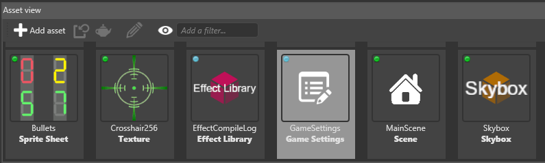
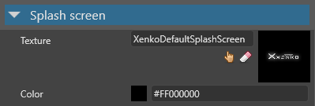

スプラッシュ画面
初級
スプラッシュ画面とは、ゲームの開始時に表示される画像 (通常はロゴ) です。カラーの地の上にフェードインした後、フェードアウトします。
Note
スプラッシュ画面は、ゲームがリリース モードでビルドされている場合にのみ表示されます。
既定のスプラッシュ画面は Stride のロゴです。
Game Settings で指定できるスプラッシュ画面は 1 つだけです。複数のスプラッシュ画面を使用したい場合は、手動で実装する必要があります。
Warning
Stride エンド ユーザー ライセンス契約の条項に従い、Stride Personal (無料) のユーザーは "Powered by Stride" のロゴをスプラッシュ画面に表示する必要があります。無料ライセンスで Stride を使用している場合は、スプラッシュ画面の画像を編集できますが (たとえば、Stride のロゴの上や下にロゴを追加する)、Stride ロゴの規則 (PDF) に従う必要があります。
スプラッシュ画面を編集する
スプラッシュ画面の設定は、［Game Settings］アセットの一部です。
［Solution explorer］(既定では左下のペイン) で、［Assets］フォルダーを選択します。

［Asset view］(既定では下部のペイン) で、［Game Settings］アセットを選択します。

［Property grid］(既定では右側のペイン) で、［Splash Screen］を展開します。

スプラッシュ画面のプロパティ
| プロパティ | 説明 |
|---|---|
| Texture | スプラッシュ画面として表示される画像 (会社のロゴなど) です。既定値は StrideDefaultSplashScreen です。 |
| Color | スプラッシュ画面がフェードインする色です。既定値は黒 (#FF000000) です。 |
Tip
さらに、スプラッシュ画面のテクスチャ自体のプロパティでストリーミングを無効にすることが必要な場合があります。これにより、テクスチャが常に最高の品質でロードされて表示されることが保証されます。詳細については、「テクスチャ > ストリーミング」を参照してください。